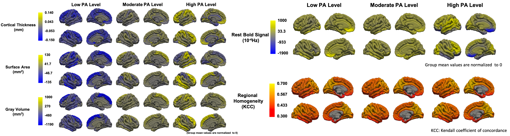

Brain structural (left) and functional plasticity (right) in different PA levels
Prepuberty and puberty are critical periods with brain develop rapidly until become a highly structured and functionally specialized brain. And the plasticity of gray and white matter continues into the 30th year of life. Previous studies found that PA can significantly promote the development of brain function which is related to the improvement of cognition function and academic performance.
In this study, PA shows a positive relationship to the surface area of left postcentral gyrus and shows an invers-U relationship to right inferior temporal gyrus.